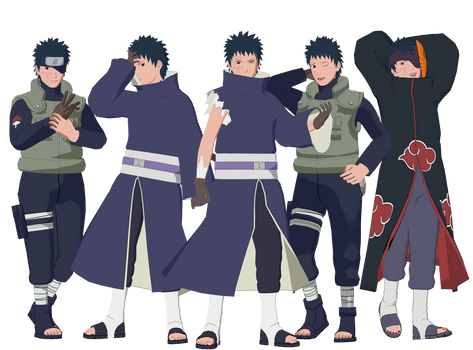
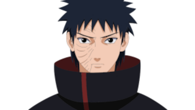

Obito Uchiha
Obito era um ninja da Aldeia da Folha, do clã Uchiha, e era companheiro de equipe de Kakashi Hatake e Rin Nohara, sob a liderança do famoso ninja Minato Namikaze, também conhecido como o Quarto Hokage.
Durante uma missão, Obito foi dado como morto após um ataque surpresa de ninjas inimigos. No entanto, ele sobreviveu, embora gravemente ferido, e foi resgatado por Madara Uchiha, um dos fundadores do clã e um dos antagonistas principais da série.
Madara manipulou Obito, alimentando sua amargura e desilusão com o mundo ninja, convencendo-o de que o sistema estava corrompido e que a única solução era impor um mundo de ilusão onde não haveria dor nem conflito. Com o tempo, Obito adotou a identidade de Tobi e se tornou um dos líderes da organização criminosa Akatsuki.
Sob a identidade de Tobi, Obito esteve envolvido em muitos dos eventos cruciais da série, incluindo a manipulação de Nagato (também conhecido como Pain) e a busca pelas bestas com cauda.
A Guerra
No entanto, a verdadeira identidade de Tobi como Obito foi mantida em segredo até o clímax da Quarta Grande Guerra Ninja, quando seu plano finalmente foi revelado. Ele desejava criar um mundo onde Rin, a companheira de equipe que ele amava, estivesse viva e feliz.
No ápice da guerra, Obito confrontou Kakashi e Naruto, seus antigos companheiros de equipe. Eventualmente, através de uma série de eventos e confrontos emocionais, Obito foi levado a reconsiderar seus ideais distorcidos e reconhecer a importância da conexão humana e do trabalho em equipe.
No momento final de sua vida, Obito se redimiu ao ajudar Naruto e seus aliados a derrotar Madara e salvar o mundo ninja. Ele expressou arrependimento por suas ações e finalmente encontrou paz ao lado de Rin e de seus outros entes queridos no além-vida.
A história de Obito Uchiha é uma saga de tragédia, manipulação e redenção, marcando uma das narrativas mais complexas e emocionantes de toda a série Naruto.
Espero que tenha gostado!!!!